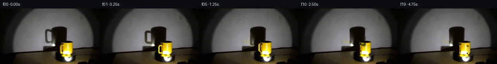
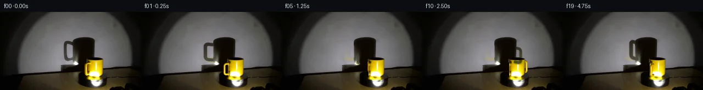
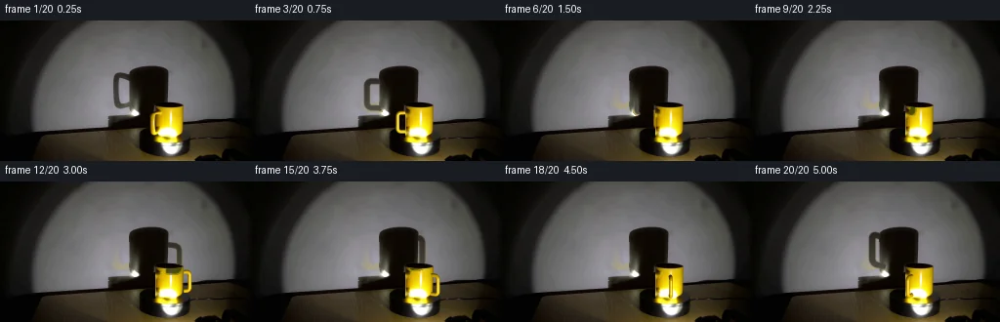
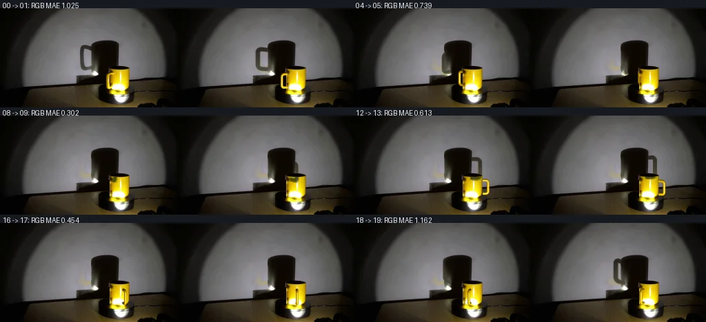

V0 · 初版
2026-11-05T04:16:10.008830+00:00 · RGB 263e29895bcf
![]()
Observable Generation Trace
把最终像素视频、Harness 冻结的每轮候选、真实工具事件和 Agent 自述放在同一页。可观测证据与模型自述分开标记，避免把“模型说它检查过”误当成真实工具调用。
![首帧]()
Static locked-off single-shot with fixed frame throughout filmed with constant framerate in real-time. The scene shows a realistic scientific demonstration. The scene only contains the described setup and actions. The yellow mug sits on the black, clockwise-rotating platform, and the spotlight points toward the yellow mug. The yellow mug rotates clockwise on the black platform while the spotlight casts a large shadow on the wall behind it.
首帧显示在左侧播放器初始画面。Track 权限、隔离和 tensor 一致性来自 run manifest，而不是 METHOD.md。
默认勾选初版和最终版；可选其他版本一起同步播放。仅检查图更新的连续重复快照已合并，回退旧视频仍保留为一次修订。
Observable events
来源：events.jsonl + run manifest
此 Track 禁止读取输出图片。逐轮预览由外部 Harness 自动冻结，只用于事后审计，生成 Agent 当时看不到这些页面。
Frozen candidates
每张图来自该 round 的真实 00 / 01 / 05 / 10 / 19 帧

pixels bc2813dbfa05bca6 · code 5a8b3d90fe59ac87
--- previous/generate.py
+++ current/generate.py
@@ -0,0 +1,305 @@
+"""Local photographed-pixel reconstruction and analytic handle/shadow projection.
+
+No external renderer, model, reference imagery, or image-view tools are used.
+"""
+from pathlib import Path
+import json
+import math
+import numpy as np
+import cv2
+from PIL import Image, ImageDraw
+from scipy.ndimage import gaussian_filter, map_coordinates
+from artifact_io import save
+
+ROOT = Path(__file__).resolve().parent
+W, H, S = 256, 144, 4
+ORIGINAL = np.asarray(Image.open(ROOT / 'first_frame.png').convert('RGB'))
+IMAGE = ORIGINAL.astype(np.float64)
+X0, Y0, RADIUS, HEIGHT = 173.0, 122.0, 14.65, 35.2
+CAMERA_SLOPE = 0.22
+LIGHT = np.array([47.0, -170.0, -23.0])
+WALL_DEPTH, WALL_Y = 70.0, 112.7
+INITIAL_DEGREES = -40.0
+FPS, SPEED = 4.0, 60.0
+YY, XX = np.mgrid[:H, :W]
+HY, HX = np.mgrid[:H*S, :W*S]
+PX = (HX + .5) / S - .5
+PY = (HY + .5) / S - .5
+
+
+def make_path():
+ """Rounded ceramic U; its two ends terminate within the mug wall."""
+ paths = []
+ def line(a, b, n):
+ paths.append(np.linspace(a, b, n, endpoint=False))
+ line((12.8, 28.3), (19.0, 28.3), 20)
+ a = np.linspace(np.pi/2, 0, 28, endpoint=False)
+ paths.append(np.c_[19.0 + 3.5*np.cos(a), 24.8 + 3.5*np.sin(a)])
+ line((22.5, 24.8), (22.5, 12.5), 42)
+ a = np.linspace(0, -np.pi/2, 28, endpoint=False)
+ paths.append(np.c_[19.0 + 3.5*np.cos(a), 12.5 + 3.5*np.sin(a)])
+ line((19.0, 9.0), (12.8, 9.0), 20)
+ paths.append(np.array([[12.8, 9.0]]))
+ return np.concatenate(paths)
+
+
+PATH = make_path()
+TANGENT = np.gradient(PATH, axis=0)
+TANGENT /= np.linalg.norm(TANGENT, axis=1, keepdims=True)
+PLANE_NORMAL = np.c_[TANGENT[:, 1], -TANGENT[:, 0]]
+V = np.arange(28) * (2*np.pi/28)
+TUBE = 1.9
+TRIANGLES = []
+for i in range(len(PATH)-1):
+ for j in range(len(V)):
+ a, b = i*len(V)+j, i*len(V)+(j+1)%len(V)
+ c, d = (i+1)*len(V)+j, (i+1)*len(V)+(j+1)%len(V)
+ TRIANGLES.extend([(a,c,b), (b,c,d)])
+TRIANGLES = np.array(TRIANGLES)
+
+
+def geometry(degrees):
+ phi = np.deg2rad(INITIAL_DEGREES + degrees)
+ radial = np.array([-np.cos(phi), np.sin(phi), 0.0])
+ sideways = np.array([np.sin(phi), np.cos(phi), 0.0])
+ up = np.array([0., 0., 1.])
+ centers = PATH[:, :1]*radial + PATH[:, 1:]*up
+ n_in_plane = PLANE_NORMAL[:, :1]*radial + PLANE_NORMAL[:, 1:]*up
+ normals = n_in_plane[:, None, :]*np.cos(V)[None, :, None] + sideways[None, None, :]*np.sin(V)[None, :, None]
+ vertices = centers[:, None, :] + TUBE*normals
+ return vertices.reshape(-1, 3), normals.reshape(-1, 3)
+
+
+def camera(points):
+ return np.c_[X0+points[:,0], Y0-points[:,2]-CAMERA_SLOPE*points[:,1]]
+
+
+def wall(points):
+ factor = (WALL_DEPTH-LIGHT[1])/(points[:,1]-LIGHT[1])
+ q = LIGHT + factor[:, None]*(points-LIGHT)
+ return np.c_[X0+q[:,0], WALL_Y-q[:,2]]
+
+
+def cylinder_depth():
+ x = PX-X0
+ inside = np.abs(x)<RADIUS
+ front = -np.sqrt(np.maximum(0, RADIUS**2-x**2))
+ back = -front
… diff truncated; 218 more lines …
pixels bd3dc7477e5e02ea · code efe1c66a94dfaa75
--- previous/generate.py
+++ current/generate.py
@@ -20,7 +20,7 @@
LIGHT = np.array([47.0, -170.0, -23.0])
WALL_DEPTH, WALL_Y = 70.0, 112.7
INITIAL_DEGREES = -40.0
-FPS, SPEED = 4.0, 60.0
+FPS, SPEED = 4.0, 72.0
YY, XX = np.mgrid[:H, :W]
HY, HX = np.mgrid[:H*S, :W*S]
PX = (HX + .5) / S - .5
@@ -77,7 +77,8 @@
def wall(points):
factor = (WALL_DEPTH-LIGHT[1])/(points[:,1]-LIGHT[1])
q = LIGHT + factor[:, None]*(points-LIGHT)
- return np.c_[X0+q[:,0], WALL_Y-q[:,2]]
+ # A fixed camera-plane calibration is shared by all orientations.
+ return np.c_[X0+q[:,0]-1.75, WALL_Y-q[:,2]-1.0]
def cylinder_depth():
@@ -108,11 +109,11 @@
half /= np.linalg.norm(half, axis=1, keepdims=True)
diffuse = np.maximum(0, np.sum(normals*light_dir, axis=1))
facing = np.maximum(0, normals@view)
- spec = np.maximum(0, np.sum(normals*half, axis=1))**55
- lower_light = 1.0 + .16*np.exp(-((points[:,2]-11)/8)**2)
+ spec = np.maximum(0, np.sum(normals*half, axis=1))**75
+ lower_light = 1.0 + .10*np.exp(-((points[:,2]-11)/8)**2)
brightness = (.28+.82*diffuse+.06*facing)*lower_light
- rgb = brightness[:,None]*np.array([243.,192.,2.5])
- rgb += spec[:,None]*np.array([190.,211.,240.])
+ rgb = brightness[:,None]*np.array([220.,170.,1.2])
+ rgb += spec[:,None]*np.array([180.,200.,235.])
# Small, deterministic ceramic microtexture in object coordinates.
micro = 1.0+.006*np.sin(np.arange(len(points))*2.13)
return np.clip(rgb*micro[:,None],0,255)
@@ -223,14 +224,34 @@
return None if len(x)==0 else [int(x.min()),int(y.min()),int(x.max()),int(y.max())]
+def platform_grain(clean):
+ """Rotate source microtexture, retaining the fixed lighting and outline."""
+ u=(XX-171.8)/27.5
+ v=(YY-123.8)/10.2
+ mask=(u*u+v*v<.96)&(clean.max(axis=2)<45)&(YY>=114)&(YY<=134)
+ gray=clean.mean(axis=2)
+ weight=gaussian_filter(mask.astype(float),1.0)
+ smooth=gaussian_filter(gray*mask,1.0)/np.maximum(weight,.001)
+ grain=np.where(mask,np.clip(gray-smooth,-1.5,1.5),0)
+ grain=gaussian_filter(grain,.35)
+ def at_angle(degrees):
+ theta=np.deg2rad(degrees)
+ source_u=np.cos(theta)*u+np.sin(theta)*v
+ source_v=-np.sin(theta)*u+np.cos(theta)*v
+ rotated=map_coordinates(grain,[123.8+10.2*source_v,171.8+27.5*source_u],order=1,mode='constant')
+ return np.where(mask,rotated-grain,0)
+ return at_angle,mask
+
+
def main():
(ROOT/'.tmp').mkdir(exist_ok=True)
vertices,normals=geometry(0)
initial_alpha,initial_color=raster_camera(vertices,normals)
clean,lit_wall,wall_error,oldshadow,oldhandle=clean_source(initial_alpha)
+ grain_at_angle,platform_mask=platform_grain(clean)
shadow_target=np.zeros_like(IMAGE)
fraction=np.clip((YY-55)/36,0,1)
- shadow_target[:]=np.array([36.,29.,20.])+fraction[...,None]*np.array([37.,43.,38.])
+ shadow_target[:]=np.array([43.,36.,30.])+fraction[...,None]*np.array([34.,40.,34.])
frames=[]
metrics=[]
rendered_zero=None
@@ -244,9 +265,10 @@
wall_use=(YY>=41)&(YY<=101)&(XX>=109)&(XX<=192)
sa*=wall_use
shadowed=lit_wall*(1-sa[...,None])+shadow_target*sa[...,None]
- background=np.minimum(clean,shadowed)
+ textured=clean+grain_at_angle(degrees)[...,None]
+ background=np.minimum(textured,shadowed)
# Keep exact input pixels away from the finite projected shadow.
- background=np.where((sa>.001)[...,None],background,clean)
+ background=np.where((sa>.001)[...,None],background,textured)
frame=background*(1-ha[...,None])+hc
if i==0:
rendered_zero=frame.copy()
@@ -275,10 +297,10 @@
'dtype':str(frames.dtype),'tensor_shape':list(packed.shape),'tensor_dtype':str(packed.dtype),
'frame00_exact':bool(np.array_equal(frames[0],ORIGINAL)),
'wall_fit_rgb_rmse':wall_error,'png_tensor_exact':[],
… diff truncated; 18 more lines …pixels bd3dc7477e5e02ea · code efe1c66a94dfaa75
No generate.py text change in this frozen round.
pixels bd3dc7477e5e02ea · code 4ac7216968811dba
--- previous/generate.py
+++ current/generate.py
@@ -3,8 +3,10 @@
No external renderer, model, reference imagery, or image-view tools are used.
"""
from pathlib import Path
+import base64
import json
import math
+import re
import numpy as np
import cv2
from PIL import Image, ImageDraw
@@ -317,10 +319,42 @@
rgb=np.stack([(p>>16)&255,(p>>8)&255,p&255],axis=-1).astype(np.uint8)
checks['png_tensor_exact'].append(bool(np.array_equal(png,rgb)))
checks['all_pngs_verified']=all(checks['png_tensor_exact'])
+ checks['png_file_count']=len(list((ROOT/'frames').glob('*.png')))
+ checks['all_pngs_rgb']=all(Image.open(ROOT/'frames'/f'{i:02}.png').mode=='RGB' for i in range(20))
+ checks['packed_values_within_rgb24']=bool(np.all(packed<=0xFFFFFF))
+ directions=np.array([m['handle_radial_direction'] for m in metrics])
+ top_angles=np.unwrap(np.arctan2(directions[:,1],directions[:,0]))
+ top_steps=np.rad2deg(np.diff(top_angles))
+ checks['clockwise_angle_steps_degrees']=[float(x) for x in top_steps]
+ checks['constant_clockwise_rotation_verified']=bool(np.allclose(top_steps,-SPEED/FPS,atol=1e-10))
+ checks['fully_occluded_handle_frames']=[m['frame'] for m in metrics if m['handle_bbox'] is None]
+ checks['all_adjacent_frames_change']=bool(np.all(np.any(diffs>0,axis=(1,2,3))))
+ checks['fixed_pixel_fraction']=float(np.mean(np.all(frames==ORIGINAL,axis=(0,3))))
+ # Validate the standalone HTML's actual first frame and every delta packet.
+ player_text=(ROOT/'index.html').read_text()
+ payload=json.loads(re.search(r'const DATA=(.*?);\nfunction unpack',player_text,re.S).group(1))
+ unpack=lambda text:np.frombuffer(base64.b64decode(text),dtype='<u4')
+ current=unpack(payload['first']).copy()
+ player_frames=[current.copy()]
+ for packet_text in payload['deltas']:
+ packet=unpack(packet_text)
+ position=0
+ current=current.copy()
+ while position<len(packet):
+ start,count=map(int,packet[position:position+2])
+ position+=2
+ assert start+count<=W*H and position+count<=len(packet)
+ current[start:start+count]=packet[position:position+count]
+ position+=count
+ player_frames.append(current.copy())
+ checks['html_player_tensor_exact']=bool(np.array_equal(np.stack(player_frames),packed.transpose(2,0,1).reshape(20,-1)))
+ checks['html_player_4fps']=bool('},250)' in player_text)
assert frames.shape==(20,144,256,3)
assert packed.dtype==np.uint32 and packed.shape==(144,256,20)
assert checks['frame00_exact'] and checks['all_pngs_verified']
assert checks['unchanged_outside_edit_region']
+ assert checks['constant_clockwise_rotation_verified'] and checks['all_adjacent_frames_change']
+ assert checks['html_player_tensor_exact'] and checks['html_player_4fps']
(ROOT/'validation.json').write_text(json.dumps({'checks':checks,'frames':metrics},indent=2)+'\n')
print(json.dumps(checks,indent=2))
pixels bd3dc7477e5e02ea · code 013e8fe2e937a9e2
--- previous/generate.py
+++ current/generate.py
@@ -3,6 +3,8 @@
No external renderer, model, reference imagery, or image-view tools are used.
"""
from pathlib import Path
+import sys
+sys.dont_write_bytecode = True
import base64
import json
import math
@@ -330,6 +332,10 @@
checks['fully_occluded_handle_frames']=[m['frame'] for m in metrics if m['handle_bbox'] is None]
checks['all_adjacent_frames_change']=bool(np.all(np.any(diffs>0,axis=(1,2,3))))
checks['fixed_pixel_fraction']=float(np.mean(np.all(frames==ORIGINAL,axis=(0,3))))
+ old_extension=frames[6,93:120,150:159].astype(float)
+ old_yellow=(old_extension[:,:,0]>75)&(old_extension[:,:,1]>50)&(old_extension[:,:,2]<50)
+ checks['old_handle_yellow_pixels_when_occluded']=int(old_yellow.sum())
+ checks['loop_transition_rgb_mae']=float(np.abs(frames[-1].astype(float)-frames[0].astype(float)).mean())
# Validate the standalone HTML's actual first frame and every delta packet.
player_text=(ROOT/'index.html').read_text()
payload=json.loads(re.search(r'const DATA=(.*?);\nfunction unpack',player_text,re.S).group(1))Final visual checks
Harness 保存的最终产物


Agent claims
以下文字由生成 Agent 撰写，不等同于工具证据
Inputs: the attached first frame, the local first_frame.png, and prompt.txt. The first image is 256 × 144 RGB. Only the provided initial image has been seen visually; subsequent inspection will use code and numerical checks.
The camera is fixed. A dark room contains a gray wall with a broad circular spotlight and a wood-colored tabletop. The wall/table boundary descends slightly toward the left: approximately y=115 at x=40 and y=101 at x=200. The black circular turntable occupies approximately x=143–199, y=109–139. It has bright reflections near its front-right edge. The yellow mug's cylindrical body occupies approximately x=159–188, y=84–125, with its axis near x=173. Its dark elliptical opening is centered near (173, 87), with horizontal radius about 15 and vertical radius about 3.5. Its yellow handle initially occupies x=153–167, y=93–119 and partially overlaps the left body edge. The body has a narrow vertical reflection around x=174, y=95–103, and an intense broad reflection near (173, 115). These reflections come from the fixed spotlight and should stay in world/camera coordinates as the unmarked cylinder rotates.
The enlarged body shadow spans approximately x=133–173, y=47–99. The initial shadow handle spans x=116–137, y=53–91 and has a visible hollow center. The projection is displaced up and left from the mug. The wall spotlight, room, table, black platform outline, and incidental foreground objects are stationary. The platform's shape is rotationally symmetric; subtle surface detail can rotate with the mug while its fixed lighting reflections remain.
Method planned: local pixel reconstruction, antialiased projection of a mathematical three-dimensional ceramic handle, camera-depth occlusion by the photographed cylinder, and point-light projection of that same handle onto the wall. Reconstruct only the initially covered handle background, retain the photographed cylinder and fixed environment, and preserve frame 00 exactly. No models, reference images, network, external rendering engines, or image viewing of outputs will be used.
Final constant clockwise speed: 72 degrees per second, sampled every 0.25 seconds, or 18 degrees per frame. Starting handle orientation is toward the camera on the left, approximately 40 degrees forward of the left-facing radial direction. It first becomes more fully side-on, then passes behind the cylinder, toward the right, and across the foreground. Coordinates for the mathematical plan are world x to the right, depth away from the camera, and height upward. Clockwise as viewed from above maps a left-facing radius toward positive depth.
| Frame | Time (s) | Rotation (degrees) | Planned visible event |
|---|---|---|---|
| 00 | 0.00 | 0 | Exact input image; left handle and left shadow handle. |
| 01 | 0.25 | 18 | Left handle moves toward a full side view, extending a little farther left. |
| 02 | 0.50 | 36 | Broadest left-facing handle; shadow reaches its leftward extent. |
| 03 | 0.75 | 54 | Handle starts receding and rises slightly in camera projection. |
| 04 | 1.00 | 72 | Left extension narrows as the handle moves rearward. |
| 05 | 1.25 | 90 | Most of the handle is behind the cylinder. |
| 06 | 1.50 | 108 | Rear-left orientation; handle fully hidden. |
| 07 | 1.75 | 126 | Rear orientation; handle and much of its shadow merge into the body. |
| 08 | 2.00 | 144 | Handle passes behind the center toward the right. |
| 09 | 2.25 | 162 | Rear-right handle still occluded; its shadow starts extending right. |
| 10 | 2.50 | 180 | Right rear handle begins appearing at the right edge. |
| 11 | 2.75 | 198 | Right handle and right shadow extension grow. |
| 12 | 3.00 | 216 | Broad right-facing handle. |
| 13 | 3.25 | 234 | Right handle starts moving toward the camera. |
| 14 | 3.50 | 252 | Handle overlaps the front-right edge of the cylinder. |
| 15 | 3.75 | 270 | Handle moves farther across the foreground face. |
| 16 | 4.00 | 288 | Front-right handle has a narrower projected loop. |
| 17 | 4.25 | 306 | Handle crosses close to the front center. |
| 18 | 4.50 | 324 | Front handle passes toward the left. |
| 19 | 4.75 | 342 | Front-left handle widens, nearly returning to its starting orientation. |
Checks planned: exact frame-00 equality; 20 RGB images at the required resolution; uint32 packed tensor of shape (144, 256, 20); equality of every saved PNG to unpacked 0xRRGGBB values; unmodified pixels outside the local moving-object/shadow regions; constant angular increments; sensible per-frame differences; and numerical shadow/handle bounds and occlusion checks. Save the requested inspection and transition contact sheets without opening them.
Revision note: the first implementation used 60 degrees per second. Numerical geometry checks established a more forward initial orientation than the rough initial estimate. The final event table therefore uses 72 degrees per second to include the handle crossing the foreground within the requested duration. Initial projected handle bounds matched x=154–163, y=94–118. Source-based numeric calibration also refined shadow registration and the amber ceramic exposure. A maximum three-level change in source platform microtexture makes its rotation observable without moving the fixed specular reflections.
Completed a locked-camera sequence of 20 RGB frames at 256 × 144, played at 4 fps for five seconds. Frame 00.png is pixel-exact to first_frame.png. Frame sample times are 0.00 through 4.75 seconds, with each image displayed for 0.25 seconds.
The only scene sources were first_frame.png and prompt.txt. OBSERVATION.md was written before the generator and contains the measurements, event plan, and subsequent timing revision. The attached initial image supplied the visual observation. No later generated images or contact sheets were opened with image Read/View tools. All subsequent inspection used local Python arrays and numeric checks. No network, reference imagery, external AI models, external rendering engines, or subagents were used.
artifact_io.py exports all PNGs, the packed tensor, the inspection sheet, and an HTML player. generate.py creates the transition contact sheet and records numeric validation.The clockwise motion first takes the initially front-left handle into a full left side view, then behind the cylinder in frames 06–09, into a right side view, and across the foreground near frame 17. The last sampled rotation is 342 degrees. The sequence contains no camera motion, scene cuts, zoom, light motion, or added scene objects.
generate.py: deterministic local generator; run python -B generate.py from this directory.pixels.npz: key pixels, shape (144, 256, 20), dtype uint32, values encoded as 0xRRGGBB.frames/00.png through frames/19.png: the 20 RGB frame images.inspection.png: 1024 × 330 RGB contact sheet of eight selected frames.transition_check.png: 1024 × 468 RGB contact sheet of six adjacent frame pairs, labeled with numeric mean absolute differences.index.html: standalone player with embedded pixel data, playback at 250 ms per frame, seeking, replay, and looping; no external assets.OBSERVATION.md: source measurements and 20-frame event plan.METHOD.md: this report.validation.json: format, exactness, motion, occlusion, and transition measurements.This is an approximate reconstruction from one photograph, with a mathematically projected handle and shadow. Hidden background, precise camera intrinsics, material properties, and three-dimensional dimensions are inferred rather than measured from additional views. Numerical format and motion checks passed; no visual review of generated outputs is claimed.